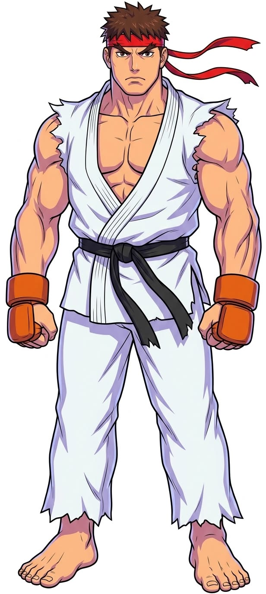
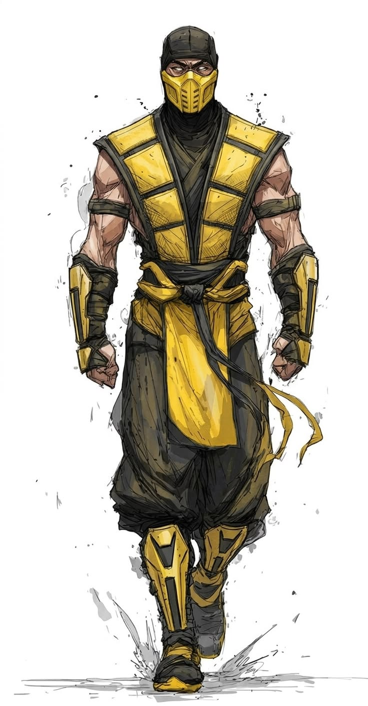
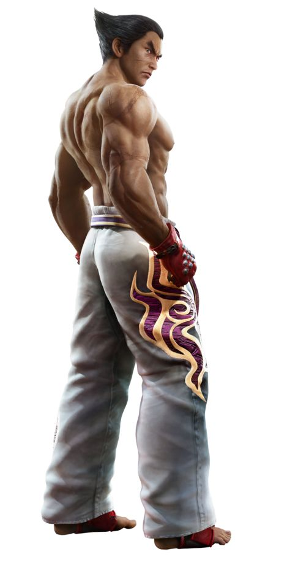
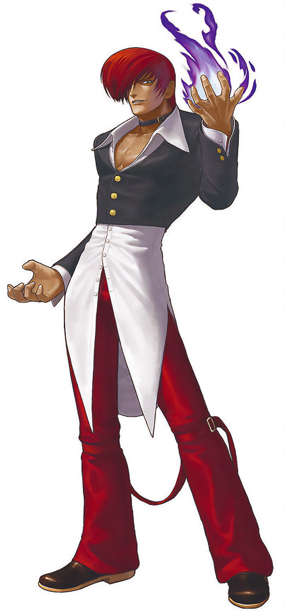
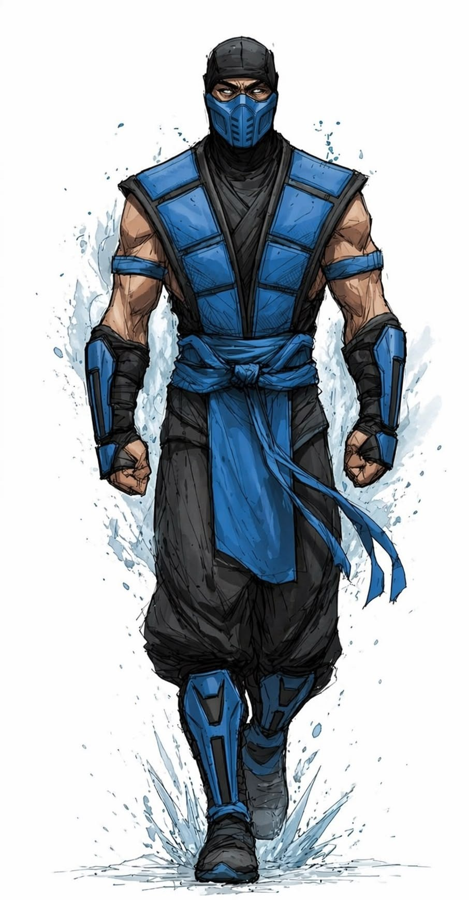

Games de Luta
Os jogos de luta são um dos gêneros mais populares da indústria dos videogames, conhecidos por batalhas competitivas, personagens icônicos e torneios mundiais.

História
O gênero começou a ganhar destaque nos fliperamas dos anos 80, mas foi durante os anos 90 que os jogos de luta dominaram o mercado.
Street Fighter II revolucionou os combates competitivos e abriu caminho para franquias lendárias como Mortal Kombat, Tekken e The King of Fighters.
Principais Franquias

Street Fighter
Uma das franquias mais importantes da história dos videogames. Conhecida por seus personagens clássicos e gameplay técnico.

Mortal Kombat
Franquia famosa por seus fatalities, violência estilizada e personagens lendários.

Tekken
Série reconhecida por seus gráficos avançados e sistema de combate em 3D.
Cenário Competitivo
A Fighting Game Community (FGC) reúne jogadores profissionais e fãs apaixonados por competições.
O EVO Championship Series é considerado o maior torneio de jogos de luta do mundo.
Personagens Icônicos
-
Ryu

-
Scorpion

-
Kazuya Mishima

-
Iori Yagami

-
Sub-Zero
